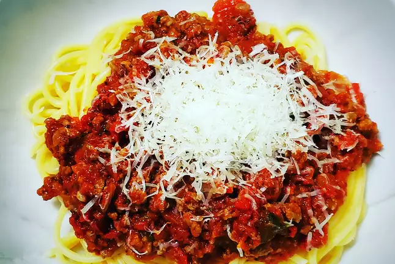

Spaghetti Bolognese

Description
The greatest of all Italian pasta-based inventions.
Ingredients
- 1kg spaghetti
- 3 large onions
- 2 carrots
- 350g mushrooms
- 300g canned chickpeas
- 3 cloves of garlic
- 500g minced beef
- 2 cans chopped tomatoes
- 3 tbsp tomato paste
- Additional stew vegetables to taste
Steps
- Heat olive oil in a large pot over medium heat.
Cook the carrots, onions, other vegetables and garlic until softened.
- Drain and add canned chickpeas and mushrooms until lightly crisped.
- Add minced beef, cooking and stirring consistently until no longer pink.
- Prepare and additonal pan and heat the canned tomatoes and paste.
- Add the vegetable-meat mixture to the tomato pan and heat on medium-heat until incorporated.
Liquid content should remain higher than solids.
- Bring to a boil before leaving to simmer for 1-2 hours,
adding seasoning in the final 30 minutes.
- Prepare the spaghetti in a pot of salted boiling water, cooked to taste.
- Drain spaghetti and ladle bolognese over portion.
Store the remainder in an airtight container.